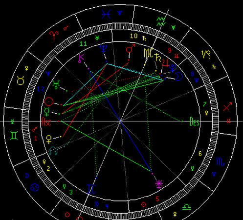
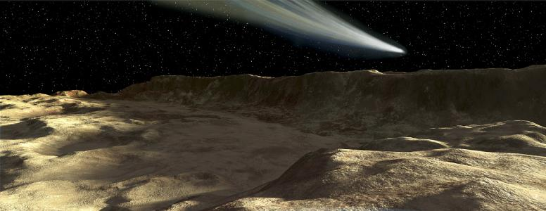
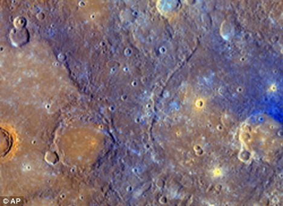
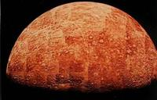
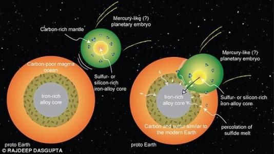
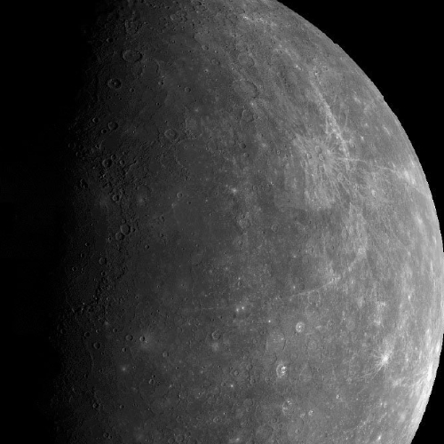
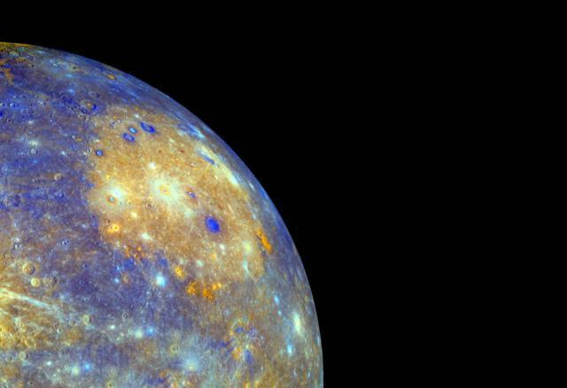
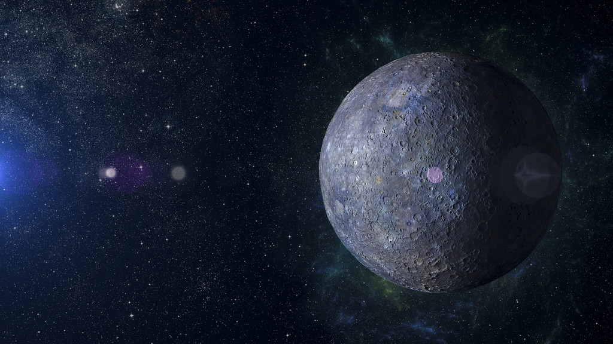
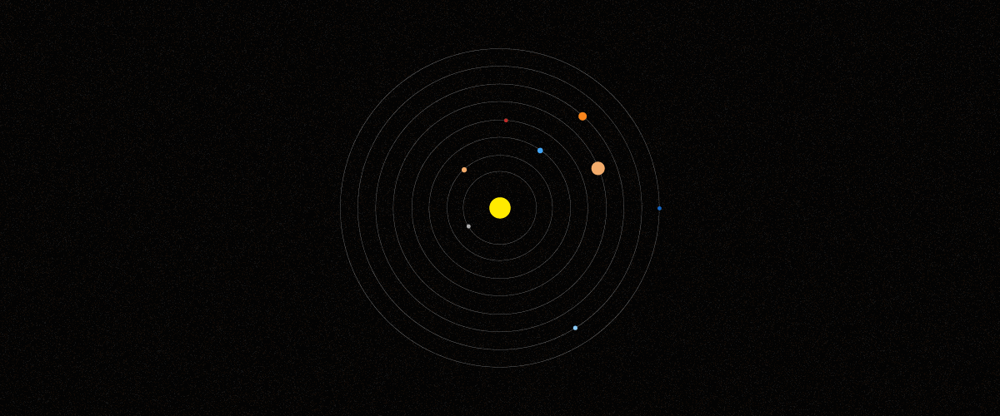
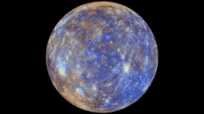

水星相关知识
水星（英语：Mercury，拉丁语：Mercurius，符号：☿），在太阳系八大行星里，水星是离太阳最近的行星。中国称之为辰星。它每87.968个地球日绕行太阳一周，而每公转2.01周同时也自转3圈。
水星有着太阳系行星中最大的轨道倾角。水星轨道的近日点每世纪比牛顿力学的预测多出43弧秒 （角秒） 的进动，这种现象直到20世纪才从爱因斯坦的广义相对论得到解释。
水星是一颗类地行星，由于其非常靠近太阳，耐受力非常强，且没有大气层所以光能够射向表面，这个星球几乎是不能有生命可以进化或者延续下去的。
内部构造
水星是太阳系内与地球相似的4颗类地行星之一，有着与地球一样的岩石个体。它是太阳系中最小的行星，在赤道的半径是2439.7公里。 水星甚至比一些巨大的天然卫星，比如甘尼米德（木卫三）和泰坦（土卫六）还要小——虽然质量较大。水星由大约70%的金属和30%的硅酸盐材料组成， 水星的密度是5.427克/cm³，在太阳系中是第二高的，仅次于地球的5.515克/cm³。如果不考虑重力压缩对物质密度的影响， 水星物质的密度将是最高的——未经重力压缩的水星物质密度是5.3克/cm³，相较之下的地球物质只有4.4克/cm³。
地形地貌
美国发射的“水手10号”在1974年3月、9月和1975年3月探测了水星，并向地面发回5000多张照片， 为我们了解水星提供了珍贵的信息。从照片上我们看出，水星的外貌酷似月地球，有许多大小不一的环形山，还有辐射纹、平原、裂谷、盆地等地形。
水星的守护神是古希腊赫菲准托斯，表面很像月球，满布着环形山、大平原、盆地、辐射纹和断崖。1976年，国际天文学联合会开始为水星上的环形山命名
水星表面上有着星罗棋布的大大小小的环形山，既有高山，也有平原，还有令人胆寒的悬崖峭壁。据统计，水星上的环形山有上千个，这些环形山比月亮上的环形山的坡度平缓些。
水星表面平均温度约452K，变化范围从90-700K，是温差最大的行星。白天太阳光直射处温度高达427℃，夜晚太阳照不到时，温度降低到-173℃。可以比较一下地球，地球上的温度变化只有11K（这里只是太阳辐射能量，不考虑“季节”，“天气”）。水星的表面的日照比地球强8.9倍，总共辐照度有9126.6W/㎡
令人惊讶地是，在1992年所进行的雷达观察显示，水星的北极有冰。一般相信这些冰存在于阳光永无法照射到的环形山底部，由于彗星的撞击或行星内部的气体冒出表面而积累的。由于没有大气调节，这些地方的温度一直维持在零下280华氏度（约合-173摄氏度）左右
水星的表面表现出巨大的急斜面，有些达到几百千米长，三千米高。有些横处于环形山的外环处，而另一些急斜面的面貌表明他们是受压缩而形成的。据估计，水星表面收缩了大约0.1%（或在星球半径上递减了大约1千米）！
水星表面受到无数次的陨石撞击，到处坑洼。当水星受到巨大的撞击后，就会有盆地形成，周围则由山脉围绕。在盆地之外是撞击喷出的物质，以及平坦的熔岩洪流平原。此外，水星在几十亿年的演变过程中，表面还形成许多褶皱、山脊和裂缝，彼此相互交错
地质构造
水星是太阳系中密度大白色带系多的行星，仅次于地球。据此，科学家们估计水星内部必定存在一个超大的内核，其内核质量甚至可以占到其总质量的2/3，而相比之下，地球的内核区质量只占地球总质量的1/3。美国华盛顿卡内基研究院地磁学系主任，美国信使号水星探测器项目首席科学家西恩·所罗门（Sean Solomon）教授表示：科学界的观点是认为在太阳系早期的狂暴撞击时代，水星曾遭遇严重撞击，导致其失去了密度较低的一部分外壳，因此留下了密度相对较大的部分。而此次信使号探测器的任务中有一项便是通过对水星进行全地表化学成分分析来检验这个理论。
水星含铁的百分率超过任何其他已知的星系行星。这里有数个的理论被提出来说明水星的高金属性。
一个理论说本来水星有一个和普通球粒状陨石相似的金属—硅酸盐比率。那时它的质量是我们观测到质量的大约2.25倍，但在早期太阳系的历史中的某个时间，一个星子/微星体撞掉了水星的1/6。影响是水星的地壳和地幔失去了。类似的另外一个理论是一个用来解释地球月亮的形成的，参见巨物影响理论。另一种说，水星可能在所谓太阳星云早期的造型阶段，在太阳爆发出它的能量之前已经稳定。在这个理论中水星那时大约质量是我们观测到的两倍；但因为原恒星收缩，水星的温度到达了大约2500-3500K之间；甚至高达10000K。许多的水星表面的岩石在这种温度下蒸发，形成"岩石蒸汽"，随后，“岩石蒸汽”被星际风暴带走。第三个理论，类似第二个，认为水星的外壳层是被太阳风长期侵蚀掉了的
水星外貌如月，内部却很像地球，也分为壳、幔、核三层。水星的半径为2439公里，是地球半径的38.2%，18个水星合并起来才抵得上一个地球的大小。质量为3.33×10²⁶克，为地球质量的5.58%，平均密度为5.433克/cm³，略低于地球的平均密度。在八大行星中，除地球外，水星的密度最大由此天文学家推测水星的外壳是由硅酸盐构成的，其中心有个比月球大得多的铁质内核。这个核球的主要成分是铁、镍和硅酸盐根据这样的结构，水星应含铁两万亿亿吨，按世界钢的年产量（约8亿吨）计算，可以开采2400亿年。
地壳厚度100-300km
结皮厚度600km
核心半径约1800km
这个行星有一个相对大的（即使是与地球相比）的铁质核；水星由大约70%的金属和30%的硅酸盐组成，以致密度较高。平均密度是5430kg/m³；略微地小于地球密度，却比金星大。地球高密度产生的原因是地球的质量压缩了地球的体积。水星的质量只有地球的5.5%——铁核占据了42%的行星容积（地核只占17%）围绕核心是一个5万公里矽酸盐组成的地幔。水星的总重量约为30000兆公吨。
行星之最
离太阳距离最近
水星和太阳的平均距离为5790万公里，约为日地距离的0.387倍（0.387天文单位），比其它太阳系的行星近，到目前为止还没有发现过比水星更近太阳的行星
轨道速度最快
因为距离最近，所以受到太阳的引力也最大，因此在它的轨道上比任何行星都跑得快，轨道速度为每秒48公里，比地球的轨道速度快18公里。这样快的速度，只用15分钟就能环绕地球一周。
表面温差最大
因为没有大气的调节，距离太阳又非常近，所以在太阳的烘烤下，向阳面的温度最高时可达430℃，但背阳面的夜间温度可降到零下160℃，昼夜温差近600℃，夺得行星表面温差最大的冠军，这真是一个处于火和冰之间的世界。
卫星最少
太阳系中发现了越来越多的卫星，总数超过60个，但水星和金星是根本没有卫星的行星。
星体磁场
在太阳系的八大行星中，火星、金星、地球、木星、土星都有磁场，但只有水星是太阳系类地行星中除了地球之外唯一拥有显著磁场的行星（不过尽管如此，它的磁场强度也仅有地球的1%不到）。对于一颗行星来说，磁场的有无绝非小事，就拿地球磁场来说，它构成了地球上生命的保护伞，帮助抵挡有害的太阳射线和其它宇宙射线，从而造就了生命的乐园。所罗门博士将地球磁场称作“我们的辐射保护伞”，如果没有地球磁场，地球上的生命将很难出现和演化。
研究人员相信水星的磁场产生机制和地球的相同，那就是其外核部位导电熔浆的流动形成的“电机”模式。此次信使号探测器将精确测量水星磁场的分布，从而帮助科学家们检验这一理论是否正确
1973年11月，第一个也是到目前为止唯一的水星探测器发射成功，它的既定考察任务中，有一项就是探测水星究竟有没有磁场。它就是美国的“水手10号”探测器。探测器曾经3次从水星上空飞过，那是在1974年的3月29日和9月21日，以及1975年3月16日。
水星表面有100多个具有放射条纹的坑穴还有大量断崖，有的长达数百千米。水星的密度与地球接近，并有一全球性的磁场。水星磁场的发现，表示水星内部可能是一个高温液态的金属核。这个既重又大的铁镍内核直径超过水星直径的1/3，有整个月球那么大。水星磁场强度只有地球的1%，磁力线的分布图形简直就是地球磁场按比例的缩影。
星体运动
水星离太阳的平均距离为5790万公里，绕太阳公转轨道的偏心率为0.206，故其轨道很扁。太阳系天体中，除冥王星外，要算水星的轨道最扁了。水星在轨道上的平均运动速度为48公里/秒，是太阳系中运动速度最快的行星，它绕太阳运行一周只需要88天，除公转之外，水星本身也有自转。过去认为水星的自转周期应当与公转周期相等，都是88天。1965年，美国天文学家戈登、佩蒂吉尔和罗·戴斯用安装在波多黎各阿雷西博天文台的、当今世界上最大的射电望远镜测定了水星的自转周期，结果并不是88天，而是58.646天，正好是水星公转周期的2/3。水星轨道有每世纪快43″的反常进动。
由于水星在近日点时总以同一经度朝着太阳，在远日点时以相差90°的经度朝着太阳，所以水星随着经度不同而出现季节变化
观测历史
古代称水星为“辰星”或“昏星”。它与太阳最大角距不超过28°，由于古代称30°为一辰，故而得名辰星
晋书：天文中（七曜 杂星气 史传事验）
辰星曰北方冬水，智也，听也。智亏听失，逆冬令，伤水气，罚见辰星。辰星见，则主刑，主廷尉，主燕赵又为燕、赵、代以北；宰相之象。亦为杀伐之气，战斗之象。又曰，军于野，辰星为偏将之象，无军为刑事和阴阳应效不效，其时不和。出失其时，寒暑失其节，邦当大饥。当出不出，是谓击卒，兵大起。在于房心间地动亦曰辰星出入躁疾，常主夷狄。又曰，蛮夷之星也，亦主刑法之得失。色黄而小，地大动。光明与月相逮，其国大水。
最早观测记录
水星最早被闪族人在（公元前三千年）发现，他们叫它Ubu-idim-gud-ud。最早的详细记录观察数据的是巴比伦人他们叫它gu-ad或gu-utu。希腊人给它起了两个古老的名字，当它出现在早晨时叫阿波罗，当它出现在傍晚叫赫耳墨斯，但是希腊天文学家知道这两个名字表示的是同一个东西。希腊哲学家赫拉克利特甚至认为水星和金星（维纳斯星）是绕太阳公转的而不是地球。
延伸阅读
欧洲日本
欧洲空间局计划和日本合作，以两艘太空船环绕水星：一艘描绘水星地图，另一艘研究它的磁气层，称为贝皮可伦坡号的探测计划。计划在2015年发射太空船，预期将于2019年抵达水星。载具将是放一个磁强计进入环绕水星的椭圆轨道，然后化学火箭将点燃，将绘制地图的探测器进入圆轨道。这两个探测器都将运作一个地球年。绘图探测器将携带类似于信使号的光谱仪，和在许多不同的波长上研究这颗行星，包括红外线、紫外线、X射线和伽马射线
美国
一系列以飞越方式进行的行星探险水手号计划中的第10个计划，也是计划中的最后一个。水手10号以飞掠的方式探测水星与金星，也是第一个探测过水星的太空船。水手10号于1973年11月3日发射。主要任务包括探测水星与金星的环境、大气、地表与行星的特征。水手10号也是第1艘利用行星重力来同时探测2颗行星的探测船，也就是以重力弹弓效应（gravity assist trajectory）来加速，进入金星重力影响区内，接着靠金星的重力将探测船抛至另一个轨道来接近水星
水手10号在1974年3月29日协调时20:47首次近距离飞掠水星，当时距离水星为703公里。在水星完成2次公转后，水手10号在1974年9月21日再度接近水星，当时距离为48,069公里。水手10号最后一次接近水星是在1975年3月16日，距离水星仅327公里，也是最接近的一次。
水星文化
1976年，国际天文学联合会开始为水星上的环形山命名。
水星的表面很像月球，满布着环形山、大平原、盆地、辐射纹和断崖。于是，水星上的环形山和月球上的环形山一样，也进行了命名。水星表面上环形山的名字都是以文学艺术家的名字来命名的，没有科学家，这是因为月面环形山大都用科学家的名字命名了。水星表面被命名的环形山直径都在20公里以上，而且都位于水星的西半球这些名人的大名将永远与日月争辉，纪念他们为人类作出的卓越贡献。

在国际天文学联合会已命名的310多个环形山的名称中，其中有15个环形山是以我们中华民族的人物的名字命名的。有伯牙：传说是春秋时代的音乐家；蔡琰：东汉末女诗人；李白：唐代大诗人；白居易：唐代大诗人：董源：五代十国南唐画家；李清照：南宋女词人；姜夔：南宋音乐家；梁楷：南宋画家；关汉卿：元代戏曲家；马致远：元代戏曲家；赵孟俯：元代书画家；王蒙：元末画家；朱耷：清初画家；曹沾（即曹雪芹）：清代文学家；鲁迅：中国近代文学家。
在天文学家创建详细的水星地图之前，Solitudo Hermae Trismegisti（荒芜的Hermes Trismegistus）被认为是水星的一大特色，覆盖了行星1/4的东南象限。
墨丘利，是在古斯塔夫·霍尔斯特的音乐，行星组曲中运动的四棱使者